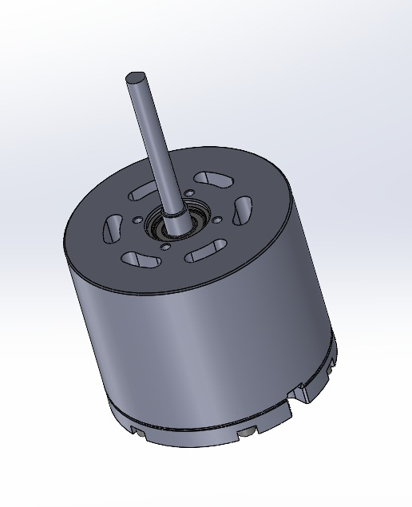
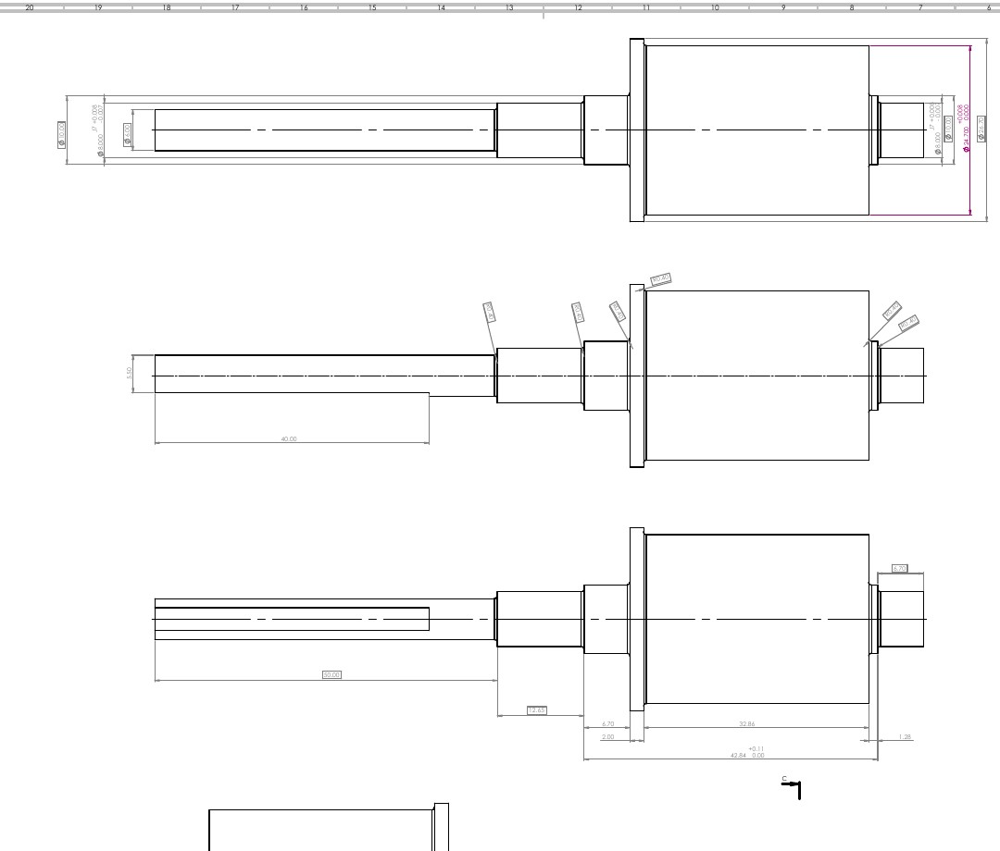
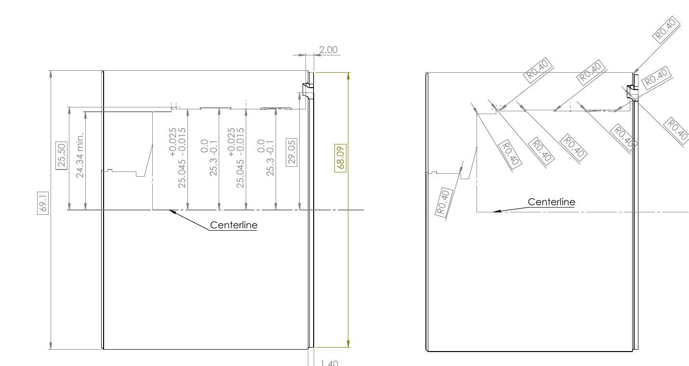
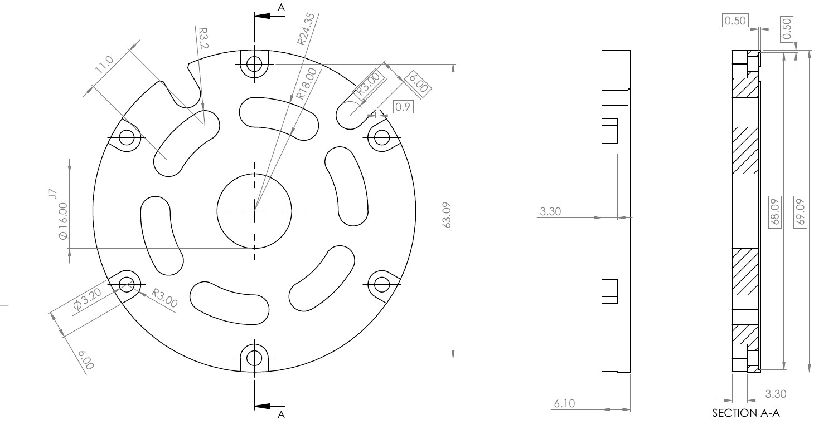
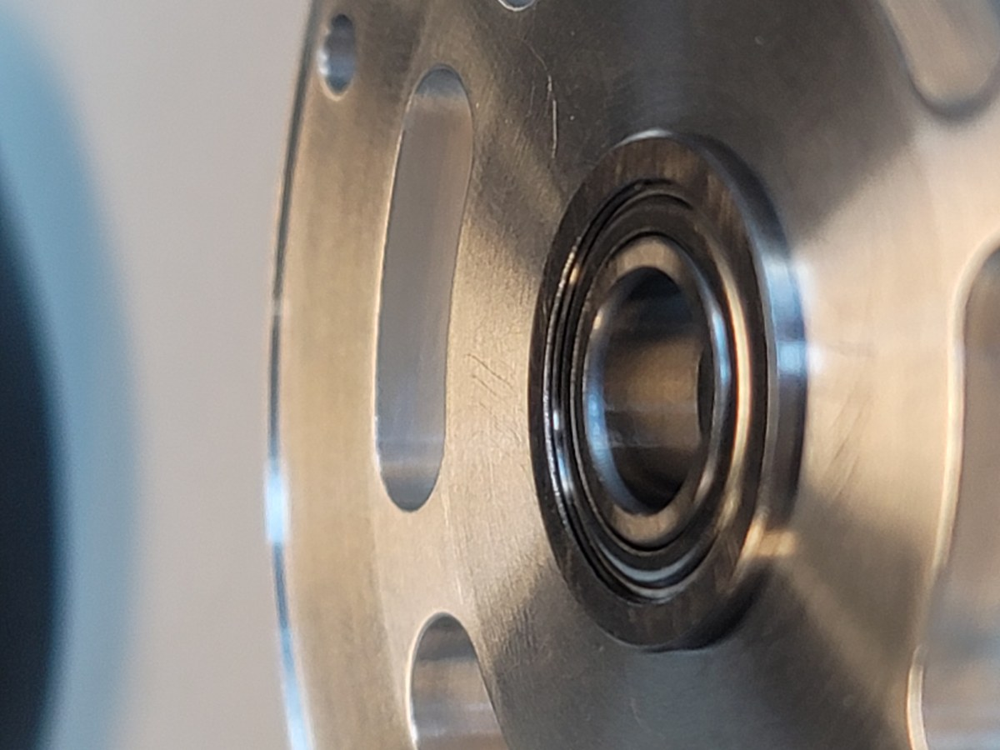
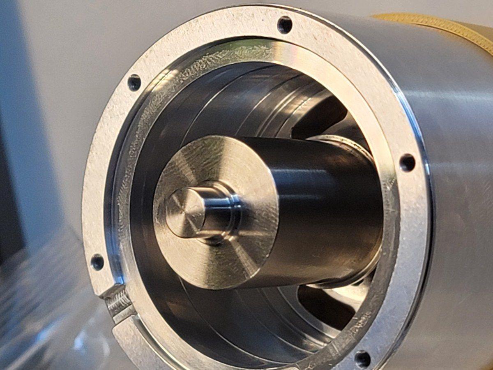
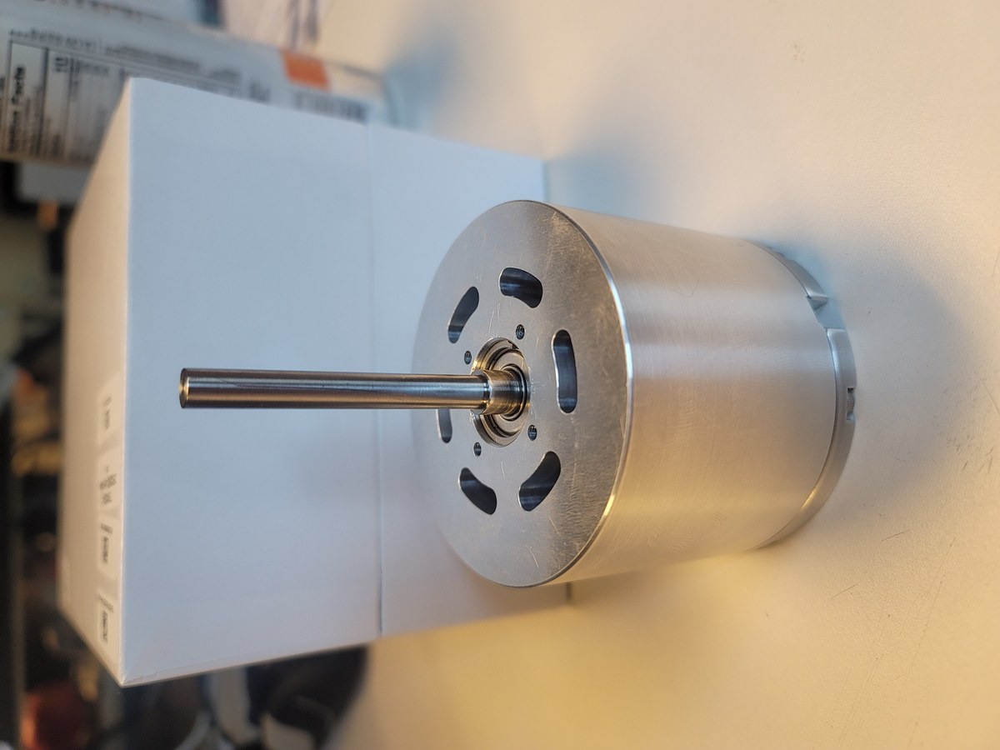

Project Overview
The existing Neumotor installation was not purpose-built for the submersible and experienced several limitations: insufficient performance, unacceptable shaft runout, overheating, and loss of power. My role as a Graduate Research Assistant was to develop a replacement motor assembly around the Kollmorgen TBM2G platform that could fit the existing submersible architecture while improving precision, packaging, reliability, and serviceability.
Design Requirements
Drop-In Integration
Fit within the existing submersible housing and surrounding architecture with minimal system changes.
Precision Alignment
Control the shaft, bearings, rotor, and stator interfaces to reduce runout and vibration.
Kollmorgen Fitment
Package the TBM2G rotor and stator while maintaining the required mechanical fit relationships.
Mineral-Oil Cooling
Use a motor architecture and materials compatible with operation in mineral oil.
Serviceability
Allow the assembly to be opened, inspected, and serviced by the research team in-house.
Manufacturability
Keep the custom components practical and cost-conscious to machine while retaining critical precision.
Mechanical Architecture
The design centers on a compact cylindrical housing that locates the Kollmorgen stator around a custom shaft-and-rotor assembly. Separate bearing supports and a removable rear plate constrain the rotating assembly while preserving access for servicing. The overall package was developed around the existing submersible envelope rather than adapting the vehicle to an off-the-shelf motor.

Addressing Shaft Runout
Excessive shaft runout was one of the primary shortcomings of the previous motor, so alignment of the rotating assembly became a central design concern. The replacement uses a custom stepped shaft, controlled bearing locations, and closely defined mating interfaces to better constrain the rotor axis and reduce vibration.

Housing & Serviceability
The housing was designed to locate the stator concentrically while fitting within the available motor envelope. Internal stepped features establish the component locations, while the removable rear plate provides bearing support and allows the motor to be disassembled rather than permanently enclosing the internal components.


Manufacturing & Assembly
The custom components were manufactured and assembled into the physical motor prototype. The assembly process provided a direct check of component fitment, bearing installation, internal packaging, and service access before final performance testing.


Current Status
The motor is mechanically assembled and ready for the next phase of validation. The current prototype is awaiting a dyno session, where performance and behavior under controlled loading can be evaluated before integration into the submersible.

Mechanical assembly complete · Dyno validation pending